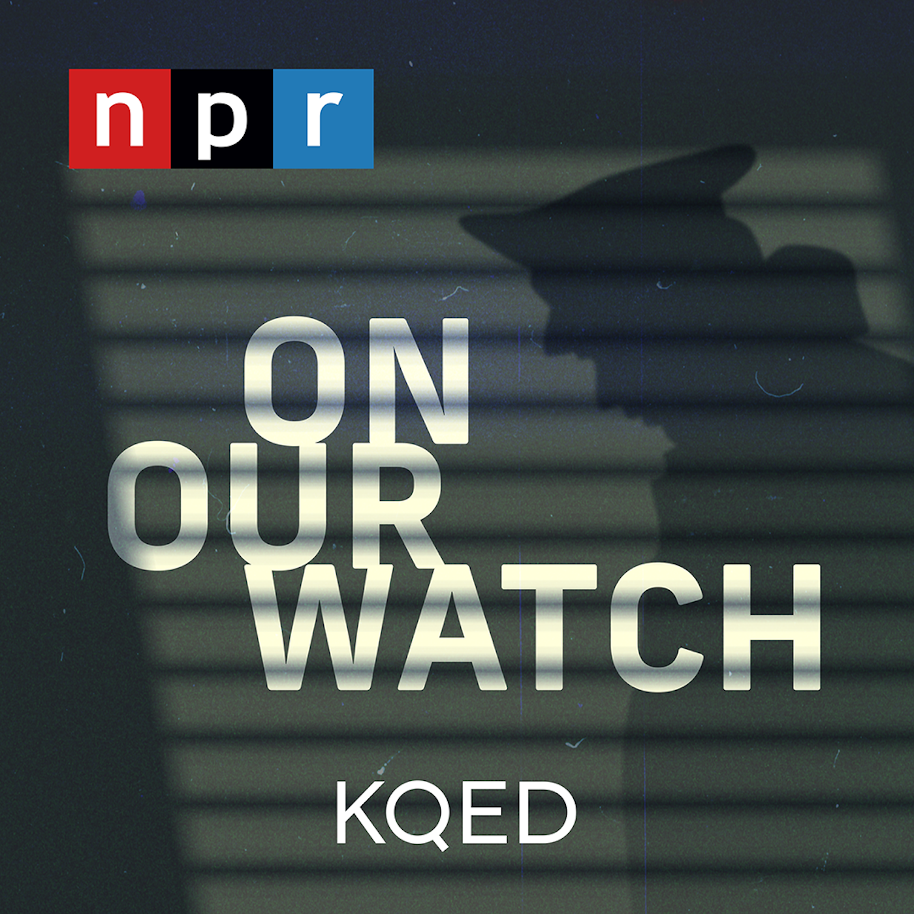

COVID Is The 'Nightmare We Really Wanted To Avoid,' India-Based Journalist Says
Jeffrey Gettleman of the
N.Y. Times says the air has been filled with smoke from crematories.Meanwhile, the health care system is collapsing and the black market for oxygen and medicine is thriving.
TERRY GROSS, HOST:
This is FRESH AIR.I'm Terry Gross.The CDC has relaxed its guidelines for people who are vaccinated, but the pandemic is far from over.COVID is rampaging through India, and epidemiologists are concerned about current and future variants from India spreading to other countries.Joining us from New Delhi, India, is Jeffrey Gettleman, The New York Times South Asia bureau chief.He's covering the COVID crisis and the desperation that has spread through India.He writes that crematories are so full of bodies, it's as if a war just happened.The night sky glows from mass cremations.Sickness and death are everywhere.There isn't sufficient genomic sequencing being done for scientists to know for sure which variant is predominating and whether the new variant in India is especially transmissible or deadly.
Gettleman is witnessing a breakdown, a collapse, but he says it didn't have to be this way in India.We're going to talk about what went wrong, what this crisis means for India and the rest of the world and what it's like to live through this in New Delhi with his wife and two children.Jeffrey Gettleman previously worked as The New York Times East Africa bureau chief based in Kenya and wrote a memoir about his time in Africa called 'Love Africa.'He won a 2012 Pulitzer Prize for international reporting.
Jeffrey Gettleman, welcome back to FRESH AIR.How are you?How is your family?
JEFFREY GETTLEMAN: Thank you for asking, and thanks for having me on the show.It's been a really tough experience witnessing this pandemic tear through India.We've been here for more than a year since the beginning, and it's been really scary.We've seen the health care system collapse around us.We've had many friends get sick.We've had some friends who died.And we all were fearing that this could happen in India.And a lot of places have had different versions of a really tough time with the coronavirus.But what we're seeing now is, like, the nightmare that we really wanted to avoid, and that is this virus just tearing through a really large country, 1.4 billion people, many of them living in close quarters, a perfect recipe for disaster for a highly contagious disease.And in many cases, there just hasn't been good response, good help if you get sick.There's - sometimes it's not clear where you can go.Hospitals have been running out of oxygen, and people have been dying in their beds in hospitals, gasping for air because the oxygen supply ran out.Medicines are in really short supply.And it just - this wave, this second wave of infections, was so overwhelming that there's just been too many sick people for the system to cope.
GROSS: Give us a sense of how many people you know who are or have been sick and who have died from COVID.
GETTLEMAN: Oh, it's countless.I mean, I've had so many friends who were positive.One of our children tested positive.We don't know if he was indeed sick or that was a false positive, even though these tests are pretty accurate.There's been so much confusion in these tests, and the results, you know, have been getting delayed.And that whole testing system was totally swamped.So we were hoping that maybe it was just a false test.And a week later, we did another test and he was OK.People we work with have been sick.Every community - there's been nobody spared by this.I work in a small office of about 10 people for The New York Times and our office manager, retired office manager, this older guy named PJ Anthony, died last year from coronavirus.So, you know, we have this small office and we lost somebody.And he was this very gentle, totally dedicated journalist, and he loved The New York Times.He'd been working for The New York Times since the '60s, and he got sick last year and died.
So it just feels like it's all around us.And there was this sense a couple weeks ago things have gotten a little better.The number of infections in Delhi has gone down a bit in the last week or two.But during the sort of spike that was happening a couple weeks ago, it just felt like there was no escape, that no matter what you did, you were going to get it, and you were going to get sick.And the big fear was, where would you go?The hospitals were turning people away.
GROSS: You mentioned that one of your children got tested twice, the first time positive, the second time negative.Are you afraid to even go out with your child to get tested and to go to a site where they're doing the testing?
GETTLEMAN: So a lot of the services in India can come to your house.So we get food delivered.We have the testing service come to our house.We try to minimize our contact with people right now, both for our sake and for their sake.
GROSS: You describe in your reporting that the skies are filled with smoke from cremations.Can you give us a sense of that?
GETTLEMAN: Yeah, it was really disturbing.So this was a few weeks ago when the cases were surging in Delhi, and the number of people dying around the city was the highest it's ever been.We don't even know the real numbers.The numbers that are officially reported, we widely - are widely believed to be gross underestimations.But a few weeks ago, when the virus was really tearing through New Delhi, I would get up in the morning, I would open the sliding door for our apartment and I'd step out on a small balcony that we have, and the first thing that I could smell was smoke.And there were these massive cremations happening across the city where there were dozens of bodies being burned at the same time.And it was creating this air pollution.You could smell it in the morning.And it was just this, like, really - it was just, like, sad and upsetting.And you just felt like you were in the middle of a place that was just overcome with death.And cremations are the way that most Hindus pay their final respects and perform last rites.And this has been the situation across India.We're watching these cremation grounds really closely because they happen to be the most reliable indicator of how widespread this sickness and death really is.
GROSS: Oh, because people can't go to doctors or hospitals.The hospitals are turning people away.So you can't rely on them for an accurate count.
GETTLEMAN: We've gotten information about certain areas in the country.We spent a lot of time researching this where we would look at the official numbers from a city or a district and then compare them with information we were getting from these cremation grounds.And there's a very specific way that cremation grounds are supposed to handle COVID bodies.They do it in isolation.The workers wear these PPE suits, which are, like, sweltering.You know, it's over 100 degrees some days in India.And these cremation workers are just dripping with sweat behind, you know, these protective clothing.And there's counts that are happening at these places.And they're recording how many suspected COVID patients are being given last rites.And those numbers are way higher than what these district officials are reporting.And we don't know if it's because they're just not testing enough - so if somebody doesn't have a positive test, even if it's suspected, that's not considered COVID - or if they're intentionally keeping these numbers down because they don't want to give the impression that things are out of control in their area.We just don't know.But we've done research at The New York Times and Indian media has done a lot of research, and the numbers just don't match up.And experts we're talking to think that the real numbers of people who are dying every day in India is two to five times what's being reported.And on Wednesday, India hit a world record of over 4,500 deaths in one day.And we think that's just like - possibly, you know, half or even a fifth of the real number.
GROSS: Recently, bodies were washed up on the banks of the Ganges River.Is the speculation that they died of COVID, but there were no crematories that had room to deal with these bodies?
GETTLEMAN: So last week, we had this horrible, gruesome thing happen where this village woke up in the morning and there were all these bodies, dozens of corpses, along the banks of a river.And nobody in this town had ever seen anything like that.And after doing some reporting, it seems that there were other villages nearby where the people couldn't afford to perform a cremation.So much of the medicine and the care and even the last rites in India connected to these - this surge of COVID patients - has - the price has sharply increased, everything - medicine, oxygen canister, the price of cremation, the price of firewood at the cremation grounds.And so the thinking was that these people in this area couldn't afford these new super high cremation prices and were just disposing their loved ones in the Ganges River, which is a holy river.And there are times when people do perform last rites, but nothing at a scale like that.
GROSS: We need to take a short break here.I hate to interrupt, but let's do that, and then we'll pick up where we left off.If you're just joining us, my guest is Jeffrey Gettleman.He's The New York Times South Asia bureau chief.He's based in New Delhi where he's speaking to us from.We'll be right back after this break.This is FRESH AIR.
(SOUNDBITE OF SILK ROAD ENSEMBLE'S 'MADHOUSHI')
GROSS: This is FRESH AIR.Let's get back to the interview I recorded yesterday with Jeffrey Gettleman, who's in New Delhi.India is experiencing the world's worst coronavirus.Gettleman says sickness and death are everywhere.He's The New York Times South Asia bureau chief.Before that, he was the Times East Africa bureau chief based in Kenya.
What's the situation like in hospitals and outside of hospitals?'Cause it sounds like thousands of people have been turned away from hospitals 'cause the hospitals have been filled.They don't have medical supplies.I mean, you even described like a - mini riots breaking out in hospitals.
GETTLEMAN: It's been been very chaotic at hospitals across India.So at first when this surge hit New Delhi, which is the capital of India, a city of 20 million people, with some very good hospitals.This is home to India's elite.This is where some of the wealthiest and most powerful people in the country live.But even here, the hospitals were so full, they were turning people away.So loved ones would race to the hospital with somebody in their house who was having trouble breathing or seemed really weak.And they'd get to these hospitals, and the guards wouldn't let them in.And so people were dying in the back seats of their cars.They were dying in rickshaws.Some were just left on the curb in front of these facilities because they couldn't get inside and were dying.
And we've seen - you know, this virus works in waves.And we're seeing now this wave in Delhi go down a bit, but it's just spreading.So this same scenario that I'm describing to you is now happening in other cities across India, other places across India.As Delhi has stabilized a bit, we're seeing emergencies in other states like Goa.Goa is a very popular tourist destination.It's a beautiful green coastal state with great beaches.And just about a week ago, they had several incidents where dozens of people died in a hospital because oxygen ran out.The hospital administration could not get enough medical oxygen to give to people who needed it, and they put out SOS messages and begged for some suppliers to come to them.And it never got there, and dozens of people died in the hospital because of it.
GROSS: This has been a kind of perverse growth opportunity for the black market.What's happening on the black market?
GETTLEMAN: So we're seeing people take advantage of this.It's like war profiteering.I've worked in Iraq and Afghanistan and other conflict zones around the world, and I've seen this happen, where there's like - where there's a market because of fear or short supply.And businessmen figure out how to capitalize on that.And that's what we've seen in India.So we've seen markets for fake drugs.There's this one drug called Remdesivir.It's a medicine that many people believe in India will help cure a severe case of COVID.It's not proven, but there's such desperation to get that drug, people are selling it at, like, 10 times the price - hundreds of dollars for one dose when it should be, like, $60.And worse, there are some unscrupulous businessmen who are making thousands of vials of what they're calling Remdesivir, and they're putting it out on the market, and it's totally bogus.And it could even be dangerous to inject yourself with it.So we've seen a lot of scams like that.
We spoke to somebody who had uncovered a scam where some scrap yard dealer was taking fire extinguishers, stripping the red paint off, painting them black and selling them as oxygen cylinders.They're totally different.A fire extinguisher is not nearly as thick.It doesn't have the pressure.And so if you fill a fire extinguisher with high-pressure oxygen, it could explode.So we're seeing just this this profiteering, this pandemic profiteering.And the police are on it.They're busting people every day.They've made arrests.They're trying to track these social media sites that advertise these fake drugs or these fake oxygen cylinders.But it's just proliferating.
And what you're seeing from afar and what I'm experiencing is a country in the throes of one of the worst crises it's ever experienced.There are more people dying on a daily basis.There are more people getting sick.There's more sense of emergency than India has experienced in a long, long time, if ever.And so it's bringing out some really unsavory characters.And it's kind of spreading this sense of fear and desperation.That's what we're seeing.
GROSS: I think you maybe just answered a question I was about to ask you.But let's see (laughter).I was going to ask you if you think the social fabric is fraying in India.It sounds like it's not.
GETTLEMAN: We're seeing both.We're seeing some people do some really bad things to each other.We're seeing hospitals turning people away and this - sometimes, this kind of coldness, this numbness, to people in need.We saw this at the beginning of the pandemic.But on the other side, we've also seen some, like, wonderful people coming to the rescue.And on social media especially, there's this really interesting movement of young people who are really tech savvy, who are scouring, you know, thousands of posts and sites and trying to find places where there's oxygen or there's medicine or there's hospital bits and then matching them up with people who are putting out SOS messages asking for that.
There's like this whole marketplace on social media right now where somebody sends out a message and says, I've been turned away from these hospitals in Delhi.Does anybody know of a place nearby where I can get help?Or I can't find oxygen.Or I can't find this.And so we've written about these great, you know, examples of people connecting those in need with those who have the resources.So it's like any sort of crisis, you're seeing the extremes.The biggest part of this that to me is unfortunate is that India was doing pretty well with containing the virus that the first wave, we didn't have, you know, as many of these issues, nearly as many.And the government did a good job of sending a very clear signal that the prime minister, Narendra Modi - he has plenty of critics, trust me.But he also was not ambiguous about what to do at the beginning, at the beginning.This is last year.It's different.And he said, wear masks.Maintain social distance.Take this seriously.It's going to be hard.But we can get through it.And the first wave passed without a huge crisis.
But then he and many others in India got overconfident.They thought, you know what?We beat this.He even declared victory earlier this year.And he said at a big international conference, we've saved humanity from the coronavirus.And his officials said, it's basically over.We're at the end game of the pandemic.This was, like, in February and March.And meanwhile, this huge second wave was looming toward us.And the country just dropped its guard.I saw it myself.People weren't wearing masks.They were socializing.There was this sense - and I was guilty of it, too - that, like, maybe things here will go back to normal and we can kind of enjoy our lives again.And at that same time, these cases were slowly climbing.And these variants, new versions of the virus, were spreading.And by April, it just exploded.
GROSS: You know, as you say that, I think about what's happening here with people being told by the CDC, if you're vaccinated, you don't need a mask.And things are - you know, stadiums are opening up, restaurants.And the difference is, I mean, so many Americans have been vaccinated.In India, the vaccination rate is very low.And also, the people who have been vaccinated have mostly gotten, I think, the AstraZeneca vaccine, which isn't nearly as efficacious as the Moderna and Pfizer or even, I think, the Johnson Johnson.
GETTLEMAN: That's exactly it.The biggest difference is vaccinations.So in the West and in the U.S., they have gotten this vaccine out to lots of people.Of course, there are those who don't want to take it.And that's going to be a problem because we - you need everybody to take it to really stop this virus from spreading.But in India, it's not so much a vaccine hesitancy problem.It's that they don't have the doses.And right now, in a country of 1.4 billion people, you have less than 3% who've been fully vaccinated.So that's 97% of 1.4 billion.And I'm sorry, I can't do that math off the top of my head.But it's a lot of people.They are vulnerable.
And at the same time, you have these new variants because India is like the perfect laboratory for mutations.It's - you got lots of people in close quarters.The virus can spread very fast.It can evolve and adapt very fast.And so these new variants have emerged from India that may be more contagious, may be deadlier.And that is part of the problem.And the country just doesn't have the resources or the capacity or the distribution to get this vaccine out that fast.And it's actually even going down.There was - they were giving out 3 million doses a day of the vaccine, which would be a lot in any country, except it's 1.4 billion people.So that's a very small percentage.But now it's dropped.Because of all these lockdowns and supply complications, there's something like just a million doses being given a day.And that means it would take years to fully vaccinate this entire country.
GROSS: We need to take another break here, Jeffrey.I'm sorry.So let's just take a break, and then we'll continue our conversation.If you're just joining us, my guest is Jeffrey Gettleman.He's The New York Times' South Asia bureau chief who's based in New Delhi, India, where he's speaking to us from.We'll be back after a break.I'm Terry Gross.And this is FRESH AIR.
(SOUNDBITE OF SAMIR CHATTERJEE, MIMI JONG, BEN OPIE, JEFFREY BERMAN, CHRISTOPHER PARKER AND MATT BOOTH'S 'SLAKE (DESH)')
GROSS: This is FRESH AIR.I'm Terry Gross.Let's get back to the interview I recorded yesterday with Jeffrey Gettleman, who's in New Delhi, India.The country is so overwhelmed by the pandemic that hospitals are turning people away.It's nearly impossible for many people to get the oxygen or medications they need.And smoke from cremations has filled the skies.Gettleman is The New York Times' South Asia bureau chief.What do we know so far about what the predominant variants are in India?
GETTLEMAN: So we think there's a few variants in India.We think there's this British variant that is considered more contagious and more dangerous, and that there's also this other variant that they're referring to as the double mutant.And the reason why it's gotten that name, this is a variant that was first detected in India last year in October.So they've known - you know, some scientists here have known about this threat since October.This variant is called the double mutant because it has two mutations that have been detected in other variants.One, this California mutation that was - that scientists believe is really transmissible and more contagious.And then another mutation on that same variant is similar to a mutation found in South Africa that people believe made it more deadly.
So the worry is that this version of the coronavirus in India, which is getting detected more and more frequently, may be both more contagious and deadlier.But we don't know.And that's, like, the frustration I'm hearing from lots of scientists and doctors I talk to.They just want like more information, more data.They want to crunch all these numbers and look at these studies.And the Indian government just hasn't invested in it and isn't releasing much information.
GROSS: India is one of the major manufacturers of vaccines, and the vaccine that they've been manufacturing is AstraZeneca.But a very small percentage of the population is actually vaccinated.What went wrong?
GETTLEMAN: So that's a really good question.I did a story last year from the Serum Institute of India, which is a fascinating company.It is the world's largest manufacturer of vaccines.They make more vaccines for measles, tuberculosis, polio, everything than any other company in the world.And they have this enormous property like a college campus with dozens of buildings and laboratories and assembly lines.And I went there last year because they got the contract to produce the AstraZeneca vaccine.And they were originally going to make so much of this stuff that it would satisfy all of India's needs and they could export it to the world.
And what's interesting about the company is it started out as a horse breeding farm.The founder in the '60s and '70s was breeding racehorses.And back then, a common way to make a basic vaccine was to inject antibodies into a horse and then take out the blood and use that to make a vaccine that would essentially be taking the serum from the horse's blood and injecting it into people.That's how this serum institute started.It's now a billion-dollar business.The family that runs it, the Poonawallas, are some of the richest people in India, and they were expected to play this big role.
But India's needs got so large that the number of vaccines that this institute was making had to go to India.They also ran into supply problems.They said they couldn't get the right raw materials from the U.S.They had a fire at one of their facilities that killed several people and put them back many months.And so it's been kind of one disaster after another on the vaccine front in India.And at this rate, it's going to take, you know, a couple of years to get the whole population protected.
GROSS: Because what happens in India with the virus is going to affect the rest of the world, especially if there are new mutations, there's a lot of concern that vaccines from other countries should be sent to India to help them get through the pandemic and to try to stop the virus there.And I know the Biden administration has committed millions of vaccines.But whatever the number is - I don't remember the exact number - I know compared to what is needed in India that it's really very small, even though it sounds like a big number.What are other countries doing to try to help the situation in India, and if not for the sake of Indians, for their own sake?
GETTLEMAN: Exactly.That's a really good point.When things got really bad here a couple weeks ago, there was this sudden mobilization around the world to help India.The U.S. began sending in ventilators, medicine, resources.So did Arab countries, European countries.These military planes are coming in every day stuffed with stuff that India needed.I think part of the reason they were doing that is because a lot of people concluded that it's in all of our interest to contain the virus in India and not let it get totally out of control.So there was probably a selfish aspect to some of that relief operation.I don't know that for a fact, but it just seemed like there was concern for this spreading outside of India.That's helped a little bit.But the needs here are so big.
And what's also striking about this crisis is that the elite is really no better off.And India is a place where everything kind of turns on connections.And the elite is able to get anything done depending on who you know.But during this crisis, it's been really difficult for anybody to get a vaccine, for instance.And with the hospital situation, it was just as dire.That's the dominant feeling when you're in a situation like this, it's helplessness.It's that you can't help yourself.You can't help your family.You can't help your friends.There's so many people scrambling for the same things that nobody can guarantee to get it.
GROSS: And as you say in India, for people who are poor, they are especially crowded together and are probably therefore especially vulnerable to the spread of the virus.
GETTLEMAN: The health care for poor people in this country is really bad.I was in some hospitals before the pandemic, and I was stunned by how many people were crowded in the hallways, how few resources there were, just how overwhelmed the health care was in India.This is before the pandemic.This is going back a couple of years.
So the amount India has invested in public health is really low.Neighboring countries that are poorer than India, like Bangladesh, for instance, have done a better job in public health in containing the virus.You don't hear about an enormous emergency in Bangladesh.Bangladesh is surrounded by India on both sides.They've done better.
So poor people in India have been really neglected when it comes to hospitals and to doctors and to public health.And I think there are many, many people across this country who are dying of coronavirus that are not even showing up anywhere in the official records of this.They're not getting tested.They're not going to hospitals.Not a single doctor looks at them.They get sick.They feel difficulty in breathing.They have a really bad cough.Their oxygen levels drop, and they die at home, and they get cremated the next day, and that's that.So I don't think we have - I don't think it will be until years later that we really know how bad this pandemic has been in India, especially in these poor rural areas.I think they're going to bear on a really heavy price for this.
GROSS: Let me reintroduce you here.If you're just joining us, my guest is Jeffrey Gettleman, The New York Times South Asia bureau chief who's based in New Delhi, India, where he's speaking to us from.We'll be right back after this break.This is FRESH AIR.
(SOUNDBITE OF SAMIR CHATTERJEE'S 'BILAWAL')
GROSS: This is FRESH AIR.Let's get back to the interview I recorded yesterday with Jeffrey Gettleman, who's in New Delhi.India is experiencing the world's worst coronavirus.Gettleman says sickness and death are everywhere.He's The New York Times South Asia bureau chief.Before that, he was the Times East Africa bureau chief based in Kenya.
Jeffrey, we were talking about vaccinations and how India doesn't have nearly enough vaccinations, and a very small percentage of people in India have been vaccinated.India had been exporting vaccines to other countries after the first wave died down and Prime Minister Modi basically declared victory over the virus.Are people thinking there was an alternate way of dealing with that, that so much shouldn't have been exported?
GETTLEMAN: Definitely, Terry.The anti-government sentiments are growing by the day.A lot of people are really frustrated.They think the government dropped the ball.They think the government sent the wrong signal.They think that the government was trying to look big on the world stage and be seen as really magnanimous and as a savior and was giving out these doses of vaccines made here in India.You know, millions of them, something like 60 million doses, were exported this spring, and they need those doses now.That was a total miscalculation, but it's in a string of miscalculations.The prime minister, who remains very popular - there's a lot of people in this country who really believe in him and support him.In April, as these cases were surging and these cremation grounds were burning bodies around the clock, the prime minister was campaigning in a state in eastern India for state elections, holding these enormous rallies.People were packing together without masks, shoulder to shoulder, no social distancing, a huge super spreader event, the potential for that.And this is the prime minister of the country.And this was the signal he was sending.And he took a lot of heat for that.People think that was really a miscalculation.
And again, you know, it's - I don't want to go on and on about, you know, the government screw-ups.They're not on this program to defend themselves.And that's not necessarily fair to sort of just take one side of this.But just to make the point, he was very clear during the first wave of the virus last year.He sent a clear signal.He went on TV.He warned the Indian public.He locked down this place incredibly tightly.I lived through that.Nobody was going outside.It was - you know, it was hard getting food.The country shut down.They closed the domestic airspace.There was no planes in the air.Like, that's happened in very few countries.But now for some reason, they just overestimated their success.And they are paying the price.This entire country is paying the price of that.And let me add, it wasn't just the government.There were so many people out there that felt relieved this was over that they just went back to their normal lives.And they weren't vaccinated, and they were still really vulnerable.
GROSS: You know, having huge maskless rallies, political rallies, reminds me of when Donald Trump was president.And I know Trump and Indian Prime Minister Modi were allies.Are there other parallels between how they each handled the spread of coronavirus?
GETTLEMAN: It's a good question.There have been a lot of parallels drawn between Modi and Trump.They're both very strong nationalistic leaders that are really good at stirring people up and dividing people.Modi has really energized many Hindus across India, and Hindus are 80% of the population.But many Muslims - and there's, you know, something like 200 million Muslims in India - they feel very alienated by this ideology that Modi and his party espouse.So he's similar to Trump in that some people feel really strongly about him and some people really detest him.But he's not anti-science like Trump.That was what I was hearing, that he never denied the threat.He never downplayed it.He never belittled it.He took it seriously.I saw him.I was there last year when he came on TV and he was wearing a mask and he sent a very clear message.
So I think this was just a question of overconfidence that India was - and overconfidence from an understandable place.This country was just desperate to get back to normal.Its economy had been devastated.People had been cooped up for months.It's a poor country where so many people need to work to live.They can't work from home.You tell a rickshaw driver or a guy that works in a market carrying vegetables or somebody that's scavenging plastic off the streets for a few pennies a day, you tell him, hey, man, you know, would you like to work from home, he would think he died and went to heaven.Like, that's - this idea of working from home just is impossible for hundreds of millions of people in India.So there was just a real hankering to get back to normal this spring, and that's what drove so many people to drop their guard at the wrong time.
GROSS: Prime Minister Modi has blamed this resurgence of the virus on Muslims.And I kind of hesitate to even ask you how he did that because I don't want to spread, like, really false, pernicious conspiracy theories or whatever his theories are.But how did he manage to scapegoat Muslims?
GETTLEMAN: So this happened last year, and it wasn't so much Modi himself but people in his party.And his party is a close-knit organization.So his party made a huge deal out of this Muslim seminary where there's a lot of people who were packed together, holding some religious meetings, hundreds of them, in New Delhi last spring.And then some of the people who came out of that meeting were coronavirus positive, and some of them went to different parts of the country.And there were members of the ruling party that tried to say that this one place was spreading coronavirus around the country.That dovetailed with this ambient anti-Muslim feeling that's been growing in India, that the ruling party has this philosophy that India should be a Hindu-first nation.It should really celebrate its Hindu identity.And that's made a lot of Muslims feel very marginalized and frightened.And there's been more hate crimes against Muslims and more discrimination against Muslims in India under Modi.
So when this thing happened last year, people started - a lot of people started saying, oh, look, you know, Muslims are spreading the virus.We should punish them.We should stay away from them.And it was totally bogus, but it just played into these pre-existing stereotypes that people had.We haven't seen that this wave.We have not seen the finger-pointing scapegoating at one community or another.So many people have been hit by this.It's like a leveler.Whether you have money or you don't, whether you're in a city or a rural area, whoever you are, you know somebody who has died of coronavirus.
GROSS: Let me reintroduce you here.If you're just joining us, my guest is Jeffrey Gettleman, The New York Times South Asia bureau chief who's based in New Delhi, India, where he's speaking to us from.We'll be back after a short break.This is FRESH AIR.
(SOUNDBITE OF WILLIAM SUSMAN'S 'WHEN MEDICINE GOT IT WRONG: MAKE THEMSELVES HEARD - FROM CHILDHOOD')
GROSS: This is FRESH AIR.Let's get back to the interview I recorded yesterday with Jeffrey Gettleman, who is speaking to us from New Delhi.India is experiencing the world's worst coronavirus crisis.Gettleman says sickness and death are everywhere.He's The New York Times South Asia bureau chief.And before that, he was the Times East Africa bureau chief based in Kenya.
You've reported from war zones before.You've been kidnapped in Iraq.When you were in the war zones and when you were kidnapped, did you have family with you?Did you have children yet?
GETTLEMAN: No.And that's, like, the biggest difference.It's that I've taken risks on my own.I've had some very close calls.I believe strongly in the work we do.And I've been willing to put my life on the line to do it.But I never drag my family along with me.And we're all here in New Delhi together.We are living this pandemic.We made the decision not to go home.We knew other families that left during the first wave and have left in the last month to go back to the states or other places, safer places.We - this is our home.This is - my kids are in school here.Even though it's virtual, they're on an Indian schedule.My wife is working here.My job is to cover the news here.We don't really have a great choice, and we don't want to split up.There's so many different rules and restrictions that are happening between flying - flying between different countries.We don't know what would happen if the kids went home with my wife and I stayed back.We might not see each other for a long time.So that's what's different.
It's like we're in this together and we're looking out for each other.It's not all bad.Like, we spend a lot of time - I am helping my kids with school.I'm much more involved than I had been before.But it's just exhausting.It's just - frankly, it's just really exhausting.And all I can think of is, like, how much I want this to end and to be free and to talk to people without a mask and to travel around and to take an airplane to a new place and do my work and to have my kids run around outside and get some fresh air.Like, that's what I'm thinking about.
GROSS: Is the family all in agreement not to leave, not to go back to the states?
GETTLEMAN: No, we went - we all went back and forth on this.It was a very hard decision to make.We felt really uneasy a couple weeks ago when friends of ours were getting sick and couldn't find a place to get help.I had one friend, an American friend, who got really sick and was in critical condition in a hospital.And that was really scary because they couldn't find the medicine to help him.The kids don't really know, like, life in the States.They grew up in Kenya, where we worked before.They were born in Kenya.We moved to India.Like, this is sort of the life they're used to.But they were scared.Like, they asked me - they're like, Daddy, is it getting better?You know, what's going on?They not - you know, they're listening to me having these conversations with my colleagues about the death toll and the infection spread.
And, you know, the latest story we're doing about people who died in the cremation grounds and the smoke in the air - like, they're living this.And we don't - we try not to lie to them.We don't want to tell them things are great when they're not.But we also want to kind of form a wall and just let them not have to worry about this.And I tell my 9-year-old tends to get worried sometimes - we have a rule - and I say, our rule is don't worry until you have to.And that's like our rule.And he starts to worry.And I said, just remember the rule.Like, don't worry until you have to.And that's sort of how we've been living this from the beginning.
GROSS: If you decided to go back to the U.S., would you be able to?Would you have access to flying out, to a plane?
GETTLEMAN: Right now, there are few airlines - I think exactly two, Air India and United - who are flying direct flights back to the U.S. As an American citizen, I'm allowed to go back to the U.S., but there's many fewer options.There were many different ways to get home.And those airlines have stopped taking passengers from India.Flights are getting canceled.So right now, we could get out.And we may, when school is over, take the kids home to get them out and some fresh air.And then I'll come back.But, you know, I don't want to abandon this story.I don't want to abandon the people I work with.Like, that's part of it.
It's - there's - and if the family has decided that we're not going to split up, that's where the decision gets really hard to make because my job is here.I don't have a job that I can easily do from the States right now.This is my job.It's to cover this place, it's to explain it.It's to bring it to those outside of India and to try my best to to write about, like, to write about this crisis and the humanity and the inhumanity and the fear and to make it - to make people really connect with it.Like, I see that as part of my job is to create empathy for those who are suffering.And occasionally, it works.Occasionally, we do stories that people - that really resonate with people.
I wrote this first-person story a couple weeks ago about just how scary it was to be in Delhi right now.And a lot of people read it.And I heard from folks, like, that I hadn't heard from in years.And I felt qualified to do something like that.A lot of times I've covered conflicts, I'm not the one getting shot at.I'm not the one getting abused.The injustice isn't hitting me as the journalist.But in this case, I'm living in the same city.Yes, I have more resources.I have a nice apartment.I have a loving family.I'm able to insulate myself to some degree, but not totally.And as we've seen in this crisis, like, the people with resources and privilege have died by the thousands.So there's no escape right now.
GROSS: Jeffrey Gettleman, it's really been great to talk with you.I'm sorry it's under these circumstances.And I hope that you and your family manage to stay healthy.And thank you for your reporting.On behalf of a lot of your readers, I will thank you for your reporting.And in eeking out a final, like, positive note to end on, I will say you've got some mighty good internet (laughter).Our connection has been really good, better than the connection that we have with a lot of our guests in the U.S. Is that typical in India, strong internet?
GETTLEMAN: It is.We have good internet in our house.India has enormous amounts of technology.And, you know, some things here work really well.And I think that's part of the frustration of this period is like this country could have handled this better, and a lot of lives could have been saved.And people here are aware of that.And that sense of helplessness, of frustration, of the idea that, like, people you cared about didn't have to die from this - that's what a lot of people are feeling at this moment.
GROSS: Well, please stay well.And thank you so much for doing this.
GETTLEMAN: Sure.
GROSS: Jeffrey Gettleman is The New York Times' South Asia bureau chief.He spoke to us from his home in New Delhi, India.
(SOUNDBITE OF MUSIC)
GROSS: If you'd like to catch up on FRESH AIR interviews you missed, like this week's interviews with Washington Post reporter Carol Leonnig about her new book investigating problems in the Secret Service, or with Seth Rogen, who has a new memoir, check out our podcast.You'll find lots of FRESH AIR interviews.
FRESH AIR's executive producer is Danny Miller.Our technical director and engineer is Audrey Bentham, with assistance today from Al Banks.Our interviews and reviews are produced and edited by Amy Salit, Phyllis Myers, Roberta Shorrock, Sam Briger, Lauren Krenzel, Heidi Saman, Ann Marie Baldonado, Thea Chaloner, Seth Kelley and Kayla Lattimore.Our associate producer of digital media is Molly Seavy-Nesper.Therese Madden directed today's show.I'm Terry Gross.
Copyright © 2021 NPR.All rights reserved.Visit our website terms of use and permissions pages at www.npr.org for further information.
NPR transcripts are created on a rush deadline by Verb8tm, Inc., an NPR contractor, and produced using a proprietary transcription process developed with NPR.This text may not be in its final form and may be updated or revised in the future.Accuracy and availability may vary.The authoritative record of NPR’s programming is the audio record.
Posted On: 2021-05-20T17:40:00
Posted By: Terry Gross

Content Date: 2021-05-20
Download Date: 2021-05-30
Document ID: L0C04CPX1